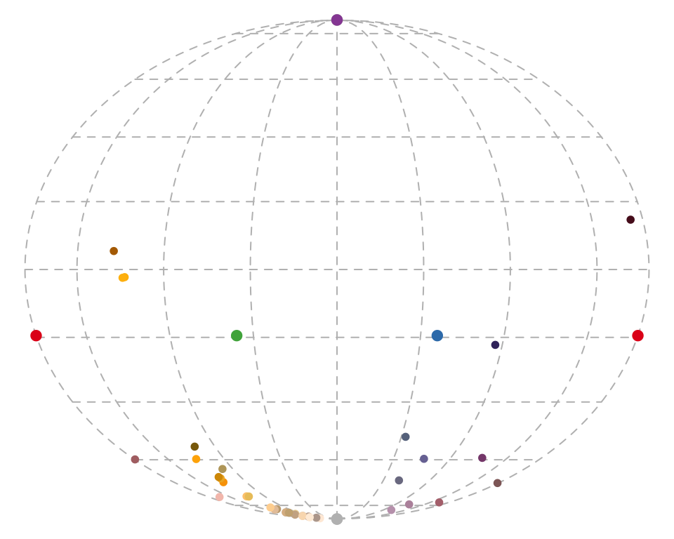

(3) Analysing Data
Rafael Maia, Thomas White, Hugo Gruson, Pierre-Paul Bitton, Chad Eliason
2019-08-26
Source:vignettes/pavo-3-analysing.Rmd
pavo-3-analysing.RmdLet’s again begin by loading the package.
# Load the package, and set a global random-number seed for the reproducible generation of fake data later on.
library(pavo)
set.seed(1612217)Analysing Spectral Data
Spectral Dataset Description
The raw spectral data used in this example are available from the package repository on github, located here. You can download and extract it to follow the vignette exactly. Alternatively, the data are included as an RData file as part of the package installation, and so can be loaded directly (see below).
The data consist of reflectance spectra, obtained using Avantes equipment and software, from seven bird species: Northern Cardinal Cardinalis cardinalis, Wattled Jacana Jacana jacana, Baltimore Oriole Icterus galbula, Peach-fronted Parakeet Aratinga aurea, American Robin Turdus migratorius, and Sayaca Tanager Thraupis sayaca. Several individuals were measured (sample size varies by species), and 3 spectra were collected from each individual. However, the number of individuals measured per species is uneven and the data have additional peculiarities that should emphasize the flexibility pavo offers, as we’ll see below.
In addition, pavo includes three datasets that can be called with the data function. data(teal), data(sicalis), and data(flowers) will all be used in this vignette. See the help files for each dataset for more information; via ?teal, ?sicalis, and ?flowers.
specs <- readRDS(system.file("extdata/specsdata.rds", package = "pavo"))
mspecs <- aggspec(specs, by = 3, FUN = mean)
spp <- gsub('\\.[0-9].*$', '', names(mspecs))[-1]
sppspec <- aggspec(mspecs, by = spp, FUN = mean)
spec.sm <- procspec(sppspec, opt = "smooth", span = 0.2)## processing options applied:
## smoothing spectra with a span of 0.2Overview
pavo offers two main approaches for spectral data analysis. First, colour variables can be calculated based on the shape of the reflectance spectra. By using special R classes for spectra data frame objects, this can easily be done using the summary function with an rspec object (see below). The function peakshape() also returns descriptors for individual peaks in spectral curves, as outlined below.
Second, reflectance spectra can be analysed by accounting for the visual system receiving the colour signal, therefore representing reflectance spectra as perceived colours. To that end, we have implemented a suite of visual models and colourspaces including; the receptor-noise limited model of model of Vorobyev et al. (1998), Endler (1990)’s segment classification method, flexible di- tri- and tetra-chromatic colourspaces, the Hexagon model of Chittka (1992), the colour-opponent coding space of Backhaus (1991), CIELAB and CIEXYZ spaces, and the categorical model of Troje (1993).
Spectral Shape Analysis
Colourimetric Variables
Obtaining colourimetric variables (pertaining to hue, saturation and brightness/value) is pretty straightforward in pavo. Since reflectance spectra is stored in an object of class rspec, the summary function recognizes the object as such and extracts 23 variables, as outlined in Montgomerie (2006). Though outlined in a book chapter on bird colouration, these variables are broadly applicable to any reflectance data, particularly if the taxon of interest has colour vision within the UV-human visible range.
The description and formulas for these variables can be found by running ?summary.rspec.
summary also takes an additional argument subset which if changed from the default FALSE to TRUE will return only the most commonly used colourimetrics (Andersson and Prager 2006). summary can also take a vector of colour variable names, which can be used to filter the results
Peak Shape Descriptors
Particularly in cases of reflectance spectra that have multiple discrete peaks (in which case the summary function will only return variables based on the tallest peak in the curve), it might be useful to obtain variables that describe individual peak’s properties. The peakshape() function identifies the peak location (H1), returns the reflectance at that point (B3), and identifies the wavelengths at which the reflectance is half that at the peak, calculating the wavelength bandwidth of that interval (the Full Width at Half Maximum, or FWHM). The function also returns the half widths, which are useful when the peaks are located near the edge of the measurement limit and half maximum reflectance can only be reliably estimated from one of its sides.
If this all sounds too esoteric, fear not: peakshape() has the option of returning plots indicating what it’s calculating. The vertical continuous red line indicates the peak location, the horizontal continuous red line indicates the half-maximum reflectance, and the distance between the dashed lines (HWHM.l and HWHM.r) is the FWHM:
Plots from peakshape
## id B3 H1 FWHM HWHM.l HWHM.r incl.min
## 1 cardinal 52.70167 700 NA 114 NA Yes
## 2 jacana 53.78744 700 NA 172 NA Yes
## 3 oriole 54.15508 700 NA 149 NA Yes
## 4 parakeet 29.86504 572 126 63 63 Yes
## 5 robin 37.85542 700 NA 107 NA Yes
## 6 tanager 30.48108 557 166 81 85 YesAs it can be seen, the variable FWHM is meaningless if the curve doesn’t have a clear peak. Sometimes, such as in the case of the Cardinal (Above figure, first panel), there might be a peak which is not the point of maximum reflectance of the entire spectral curve. peakshape() also offers a select argument to facilitate subsetting the spectra data frame to, for example, focus on a single reflectance peak:
Plot from peakshape, setting the wavelength limits to 300 and 500 nm
## id B3 H1 FWHM HWHM.l HWHM.r incl.min
## 1 cardinal 17.84381 369 100 46 54 YesVisual Modelling
Overview
All visual and colourspace modelling and plotting options are wrapped into four main function: vismodel(), colspace(), coldist(), and plot. As detailed below, these functions cover the basic processes common to most modelling approaches. Namely, the estimation of quantum catches, their conversion to an appropriate space, estimating the distances between samples, and visualising the results. As a brief example, a typical workflow for modelling might use:
-
vismodel()to estimate photoreceptor quantum catches. The assumptions of visual models may differ dramatically, so be sure to select options that are appropriate for your intended use. -
colspace()to convert the results ofvismodel()(or user-provided quantum catches) into points in a given colourspace, specified with thespaceargument. If nospaceargument is provided,colspace()will automatically select the di-, tri- or tetrahedral colourspace, depending on the nature of the input data. The result ofcolspace()will be an object of classcolspace(that inherits fromdata.frame), and will contain the location of stimuli in the selected space along with any associated colour variables. -
coldist()to estimate the colour distances between points in a colourspace (if the input is fromcolspace), or the ‘perceptual’, noise-weighted distances in the receptor-noise limited model (if the input is fromvismodel()whererelative = FALSE). -
plotthe output.plotwill automatically select the appropriate visualisation based on the inputcolspaceobject, and will also accept various graphical parameters depending on the colourspace (see?plot.colspaceand links therein for details).
Accessing and Plotting In-built Spectral Data
All in-built spectral data in pavo can be easily retrieved and/or plotted via the sensdata() function. These data can be visualised directly by including plot = TRUE, or assigned to an object for subsequent use, as in:
## wl musca.u musca.s musca.m musca.l md.r1
## 1 300 0.01148992 0.006726680 0.001533875 0.001524705 0.001713692
## 2 301 0.01152860 0.006749516 0.001535080 0.001534918 0.001731120
## 3 302 0.01156790 0.006773283 0.001536451 0.001545578 0.001751792
## 4 303 0.01160839 0.006798036 0.001537982 0.001556695 0.001775960
## 5 304 0.01165060 0.006823827 0.001539667 0.001568283 0.001803871
## 6 305 0.01169510 0.006850712 0.001541499 0.001580352 0.001835777Visual Phenotypes
pavo contains numerous di-, tri- and tetrachromatic visual systems, to accompany the suite of new models. The full complement of included systems are accessible via the vismodel() argument visual, and include:
| phenotype | description |
|---|---|
| avg.uv | average ultraviolet-sensitive avian (tetrachromat) |
| avg.v | average violet-sensitive avian (tetrachromat) |
| bluetit | The blue tit Cyanistes caeruleus (tetrachromat) |
| star | The starling Sturnus vulgaris (tetrachromat) |
| pfowl | The peafowl Pavo cristatus (tetrachromat) |
| apis | The honeybee Apis mellifera (trichromat) |
| ctenophorus | The ornate dragon lizard Ctenophorus ornatus (trichromat) |
| canis | The canid Canis familiaris (dichromat) |
| musca | The housefly Musca domestica (tetrachromat) |
| cie2 | 2-degree colour matching functions for CIE models of human colour vision (trichromat) |
| cie10 | 10-degree colour matching functions for CIE models of human colour vision (trichromat) |
| segment | A generic ‘viewer’ with broad sensitivities for use in the segment analysis of Endler (1990) (tetrachromat) |
| habronattus | The jumping spider Habronattus pyrrithrix (trichromat) |
| rhinecanthus | The triggerfish Rhinecanthus aculeatus (trichromat) |
Estimating Quantum Catch
Numerous models have been developed to understand how colours are perceived and discriminated by an individual’s or species’ visual system (described in detail in Endler 1990; Renoult, Kelber, and Schaefer 2017; Vorobyev et al. 1998). In essence, these models take into account the receptor sensitivity of the different receptors that make the visual system in question and quantify how a given colour would stimulate those receptors individually, and their combined effect on the perception of colour. These models also have an important component of assuming and interpreting the chromatic component of colour (hue and saturation) to be processed independently of the achromatic (brightness, or luminance) component. This provides a flexible framework allowing for a tiered model construction, in which information on aspects such as different illumination sources, backgrounds, and visual systems can be considered and compared.
To apply any such model, we first need to quantify receptor excitation and then consider how the signal is being processed, while possibly considering the relative density of different cones and the noise-to-signal ratio.
To quantify the stimulation of cones by the emitted colour, we will use the pavo function vismodel(). This function takes an rspec dataframe as a minimal input, and the user can either select from the available options or input their own data for the additional arguments in the function:
-
visual: the visual system to be used. Available inbuilt options are detailed above, or the user may include their own dataframe, with the first column being the wavelength range and the following columns being the absorbance at each wavelength for each cone type (see below for an example). -
achromatic: Either a receptor’s sensitivity data (available options include the blue tit, chicken, and starling double-cones, and the housefly’s R1-6 receptor), which can also be user-defined as above; or the longest-wavelength receptor, the sum of the two longest-wavelength receptors, or the sum of all receptors can be used. Alternatively,nonecan be specified for no achromatic stimulation calculation. -
illum: The illuminant being considered. By default, it considers an ideal white illuminant, but implemented options are a blue sky, standard daylight, and forest shade illuminants. A vector of same length as the wavelength range being considered can also be used as the input. -
trans: Models of the effects of light transmission (e.g. through noisy environments or ocular filters). The argument defaults toideal(i.e. no effect), though users can also use the built-in options ofbluetitorblackbirdto model the ocular transmission of blue tits/blackbirds, or specify a user-defined vector containing transmission spectra. -
qcatch: This argument determines what photon catch data should be returned-
Qi: The receptor quantum catches, calculated for receptor \(i\) as: \[Q_i = \int_\lambda{R_i(\lambda)S(\lambda)I(\lambda)d\lambda}\] Where \(\lambda\) denotes the wavelength, \(R_i(\lambda)\) the spectral sensitivity of receptor \(i\), \(S(\lambda)\) the reflectance spectrum of the colour, and \(I(\lambda)\) the illuminant spectrum. -
fi: The receptor quantum catches transformed according to Fechner’s law, in which the signal of the receptor is proportional to the logarithm of the quantum catch i.e. \(f_i = \ln(Q_i)\) -
Ei: the hyperbolic transform (a simplification of the Michaelis–Menten photoreceptor equation), where \[E_i = \frac{Q_i}{Q_i + 1}\].
-
-
bkg: The background being considered. By default, it considers an idealized background (i.e. wavelength-independent influence of the background on colour). A vector of same length as the wavelength range being considered can also be used as the input. -
vonkries: a logical argument which determines if the von Kries transformation (which normalizes receptor quantum catches to the background, thus accounting for receptor adaptation) is to be applied (defaults toFALSE). IfTRUE, \(Q_i\) is multiplied by a constant \(k\), which describes the von Kries transformation: \[k_i = \frac{1}{\int_\lambda R_i(\lambda)S^b(\lambda)I(\lambda)d\lambda}\] Where \(S^b\) denotes the reflectance spectra of the background. -
scale: This argument defines how the illuminant should be scaled. The scale of the illuminant is critical of receptor noise models in which the signal intensity influences the noise (see Receptor noise section, below). Illuminant curves should be in units of \(\mu mol.s^{-1}.m^{-2}\) in order to yield physiologically meaningful results. (Some software return illuminant information values in \(\mu Watt.cm^{-2}\), and must be converted to \(\mu mol.s^{-1}.m^{-2}\). This can be done by using theirrad2flux()andflux2irrad()functions.) Therefore, if the user-specified illuminant curves are not in these units (i.e. are measured proportional to a white standard, for example), thescaleparameter can be used as a multiplier to yield curves that are at least a reasonable approximation of the illuminant value. Commonly used values are 500 for dim conditions and 10,000 for bright conditions. -
relative: IfTRUE, it will make the cone stimulations relative to their sum. This is appropriate for colourspace models such as the avian tetrahedral colourspace (Goldsmith 1990; Stoddard and Prum 2008). For the photon catch and neural noise model, it is important to setrelative = FALSE.
All visual models begin with the estimation of receptor quantum catches. The requirements of models may differ significantly of course, so be sure to consult the function documentation and original publications. For this example, we will use the average reflectance of the different species to calculate the raw stimulation of retinal cones, considering the avian average UV visual system, a standard daylight illumination, and an idealized background.
vismod1 <- vismodel(sppspec,
visual = "avg.uv", achromatic = "bt.dc",
illum = "D65", relative = FALSE
)
vismod1Since there are multiple parameters that can be used to customize the output of vismodel(), as detailed above, for convenience these can be returned by using summary in a vismodel object:
## visual model options:
## * Quantal catch: Qi
## * Visual system, chromatic: avg.uv
## * Visual system, achromatic: bt.dc
## * Illuminant: D65, scale = 1 (von Kries colour correction not applied)
## * Background: ideal
## * Transmission: ideal
## * Relative: FALSE## u s m l
## Min. :0.01093 Min. :0.03749 Min. :0.1297 Min. :0.2171
## 1st Qu.:0.01509 1st Qu.:0.06137 1st Qu.:0.1695 1st Qu.:0.2318
## Median :0.01925 Median :0.06353 Median :0.2595 Median :0.2866
## Mean :0.02321 Mean :0.08854 Mean :0.2262 Mean :0.3197
## 3rd Qu.:0.03059 3rd Qu.:0.12753 3rd Qu.:0.2722 3rd Qu.:0.3969
## Max. :0.04177 Max. :0.15716 Max. :0.2923 Max. :0.4807
## lum
## Min. :0.1501
## 1st Qu.:0.1965
## Median :0.2194
## Mean :0.2215
## 3rd Qu.:0.2618
## Max. :0.2755We can visualise what vismodel() is doing when estimating quantum catches by comparing the reflectance spectra to the estimates they are generating:
par(mfrow = c(2, 6), oma = c(3, 3, 0, 0))
layout(rbind(c(2, 1, 4, 3, 6, 5), c(1, 1, 3, 3, 5, 5), c(8, 7, 10, 9, 12, 11), c(7, 7, 9, 9, 11, 11)))
sppspecol <- spec2rgb(sppspec)
for (i in 2:7) {
par(mar = c(2, 2, 2, 2))
plot(sppspec, select = i, col = sppspecol, lwd = 3, ylim = c(0, 100))
par(mar = c(4.1, 2.5, 2.5, 2))
barplot(as.matrix(vismod1[i, 1:4]), yaxt = "n", col = "black")
}
mtext("Wavelength (nm)", side = 1, outer = TRUE, line = 1)
mtext("Reflectance (%)", side = 2, outer = TRUE, line = 1)Plots of species mean reflectance curves with corresponding relative usml cone stimulations (insets).
As described above, vismodel also accepts user-defined visual systems, background and illuminants. We will illustrate this by showcasing the function sensmodel, which models spectral sensitivities of retinas based on their peak cone sensitivity, as described in Govardovskii et al. (2000) and Hart and Vorobyev (2005). sensmodel takes several optional arguments, but the main one is a vector containing the peak sensitivities for the cones being modelled. Let’s model an idealized dichromat visual system, with cones peaking in sensitivity at 350 and 650 nm:
idealizeddichromat <- sensmodel(c(350, 650))
plot(idealizeddichromat, col = spec2rgb(idealizeddichromat), ylab = "Absorbance")
Idealized dichromat photoreceptors created using sensmodel.
The Receptor Noise Model
The receptor-noise limited (RNL) model of Vorobyev et al. (1998), Vorobyev et al. (2001) offers a basis for estimating the ‘perceptual’ distance between coloured stimuli (depending on available physiological and behavioural data), and assumes that the simultaneous discrimination of colours is fundamentally limited by photoreceptor noise. Colour distances under the RNL model can be calculated by using the inverse of the noise-to-signal ratio, known as the Weber fraction (\(w_i\) for each cone \(i\)). The Weber fraction can be calculated from the noise-to-signal ratio of cone \(i\) (\(v_i\)) and the relative number of receptor cells of type \(i\) within the receptor field (\(n_i\)):
\[w_i = \frac{v_i}{\sqrt{n_i}}\]
\(w_i\) is the value used for the noise when considering only neural noise mechanisms. Alternatively, the model can consider that the intensity of the colour signal itself contributes to the noise (photoreceptor, or quantum, noise). In this case, the noise for a receptor \(i\) is calculated as:
\[w_i = \sqrt{\frac{v_i^2}{\sqrt{n_i}} + \frac{2}{Q_a+Q_b}}\]
where \(a\) and \(b\) refer to the two colour signals being compared. Note that when the values of \(Q_a\) and \(Q_b\) are very high, the second portion of the equation tends to zero, and the both formulas should yield similar results. Hence, it is important that the quantum catch are calculated in the appropriate illuminant scale, as described above.
Colour distances are obtained by weighting the Euclidean distance of the photoreceptor quantum catches by the Weber fraction of the cones (\(\Delta S\)). These measurements are in units of Just Noticeable Differences (JNDs), where distances over a certain threshold (usually 1) are considered to be discernible under the conditions considered (e.g., backgrounds, illumination). The equations used in these calculations are:
For dichromats: \[\Delta S = \sqrt{\frac{(\Delta f_1 - \Delta f_2)^2}{w_1^2+w_2^2}}\]
For trichromats: \[\Delta S = \sqrt{\frac{w_1^2(\Delta f_3 - \Delta f_2)^2 + w_2^2(\Delta f_3 - \Delta f_1)^2 + w_3^2(\Delta f_1 - \Delta f_2)^2 }{ (w_1w_2)^2 + (w_1w_3)^2 + (w_2w_3)^2 }}\]
For tetrachromats: \[\Delta S = \sqrt{(w_1w_2)^2(\Delta f_4 - \Delta f_3)^2 + (w_1w_3)^2(\Delta f_4 - \Delta f_2)^2 + (w_1w_4)^2(\Delta f_3 - \Delta f_2)^2 + \\ (w_2w_3)^2(\Delta f_4 - \Delta f_1)^2 + (w_2w_4)^2(\Delta f_3 - \Delta f_1)^2 + (w_3w_4)^2(\Delta f_2 - \Delta f_1)^2 / \\ ((w_1w_2w_3)^2 + (w_1w_2w_4)^2 + (w_1w_3w_4)^2 + (w_2w_3w_4)^2)}\]
For the chromatic contrast. The achromatic contrast (\(\Delta L\)) can be calculated based on the double cone or the receptor (or combination of receptors) responsible for chromatic processing by the equation:
\[\Delta L = \frac{\Delta f}{w}\]
Perceptual Distances with coldist()
pavo implements the noise-weighted colour distance calculations in the function coldist(), assuming that raw receptor quantum catches are provided (via relative = FALSE in vismodel()). For the achromatic contrast, coldist() uses n4 to calculate \(w\) for the achromatic contrast. Note that even if \(Q_i\) is chosen, values are still log-transformed. This option is available in case the user wants to specify a data frame of quantum catches that was not generated by vismodel() as an input. In this case, the argument qcatch should be used to inform the function if \(Q_i\) or \(f_i\) values are being used (note that if the input to coldist() is an object generated using the vismodel() function, this argument is ignored.) The type of noise to be calculated can be selected from the coldist() argument noise (which accepts either "neural" or "quantum").
coldist(vismod1,
noise = "neural", achromatic = TRUE, n = c(1, 2, 2, 4),
weber = 0.1, weber.achro = 0.1
)## Calculating noise-weighted Euclidean distances and noise-weighted luminance contrasts## patch1 patch2 dS dL
## 1 cardinal jacana 8.423965 3.3449627
## 2 cardinal oriole 7.905876 3.5110820
## 3 cardinal parakeet 7.999730 0.5177495
## 4 cardinal robin 5.805562 2.5606167
## 5 cardinal tanager 10.100311 1.9068807
## 6 jacana oriole 10.151253 0.1661193
## 7 jacana parakeet 4.231570 2.8272132
## 8 jacana robin 3.503769 5.9055794
## 9 jacana tanager 5.126266 1.4380820
## 10 oriole parakeet 8.135793 2.9933325
## 11 oriole robin 7.220505 6.0716987
## 12 oriole tanager 13.608253 1.6042013
## 13 parakeet robin 4.606847 3.0783661
## 14 parakeet tanager 5.969760 1.3891312
## 15 robin tanager 7.688707 4.4674974## Calculating noise-weighted Euclidean distances## patch1 patch2 dS dL
## 1 cardinal jacana 2.0993283 NA
## 2 cardinal oriole 4.6567462 NA
## 3 cardinal parakeet 2.2575457 NA
## 4 cardinal robin 3.7236780 NA
## 5 cardinal tanager 3.5417700 NA
## 6 jacana oriole 2.5574178 NA
## 7 jacana parakeet 4.3568740 NA
## 8 jacana robin 1.6243496 NA
## 9 jacana tanager 5.6410983 NA
## 10 oriole parakeet 6.9142918 NA
## 11 oriole robin 0.9330682 NA
## 12 oriole tanager 8.1985162 NA
## 13 parakeet robin 5.9812236 NA
## 14 parakeet tanager 1.2842244 NA
## 15 robin tanager 7.2654480 NAWhere dS is the chromatic contrast (\(\Delta S\)) and dL is the achromatic contrast (\(\Delta L\)). Note that, by default, achromatic = FALSE, so dL isn’t included in the second result (this is to maintain consistency since, in the vismodel() function, the achromatic argument defaults to none). As expected, values are really high under the avian colour vision, since the colours of these species are quite different and because of the enhanced discriminatory ability with four compared to two cones.
coldist() also has a subset argument, which is useful if only certain comparisons are of interest (for example, of colour patches against a background, or only comparisons among a species or body patch). subset can be a vector of length one or two. If only one subsetting option is passed, all comparisons against the matching argument are returned (useful in the case of comparing to a background, for example). If two values are passed, comparisons will only be made between samples that match that rule (partial string matching and regular expressions are accepted). For example, compare:
## Calculating noise-weighted Euclidean distances## patch1 patch2 dS dL
## 1 cardinal jacana 8.423965 NA
## 2 cardinal oriole 7.905876 NA
## 3 cardinal parakeet 7.999730 NA
## 4 cardinal robin 5.805562 NA
## 5 cardinal tanager 10.100311 NAto:
## Calculating noise-weighted Euclidean distances## patch1 patch2 dS dL
## 1 cardinal jacana 8.423965 NAConverting receptor noise-corrected distances to Cartesian coordinates
You can convert distances in JND back to Cartesian position coordinates with the function jnd2xyz(). Note that the actual position of these points in the XYZ space is arbitrary; therefore the function allows you to rotate the data so that, for example, the vector leading to the long-wavelength cone aligns with the X axis:
fakedata1 <- vapply(
seq(100, 500, by = 20),
function(x) rowSums(cbind(
dnorm(300:700, x, 30),
dnorm(300:700, x + 400, 30)
)),
numeric(401)
)
# Creating idealized specs with varying saturation
fakedata2 <- vapply(
c(500, 300, 150, 105, 75, 55, 40, 30),
function(x) dnorm(300:700, 550, x),
numeric(401)
)
fakedata1 <- as.rspec(data.frame(wl = 300:700, fakedata1))## wavelengths found in column 1## processing options applied:
## Scaling spectra to a maximum value of 1## wavelengths found in column 1## processing options applied:
## Scaling spectra to a total area of 1## processing options applied:
## Scaling spectra to a minimum value of zero# Converting reflectance to percentage
fakedata1[, -1] <- fakedata1[, -1] * 100
fakedata2[, -1] <- fakedata2[, -1] / max(fakedata2[, -1]) * 100
# Combining and converting to rspec
fakedata.c <- data.frame(wl = 300:700, fakedata1[, -1], fakedata2[, -1])
fakedata.c <- as.rspec(fakedata.c)## wavelengths found in column 1# Visual model and colour distances
fakedata.vm <- vismodel(fakedata.c, relative = FALSE, achromatic = 'all')
fakedata.cd <- coldist(fakedata.vm,
noise = "neural", n = c(1, 2, 2, 4),
weber = 0.1, achromatic = TRUE
)## Calculating noise-weighted Euclidean distances and noise-weighted luminance contrasts# Converting to Cartesian coordinates
fakedata.cc <- jnd2xyz(fakedata.cd, ref1 = "l", axis1 = c(1, 0, 0), ref2 = NULL)
head(fakedata.cc)## x y z lum
## X1 -26.165302 3.692783 -17.71718 1.430788
## X2 -11.212399 -2.085407 -27.97937 2.315951
## X3 3.076291 -7.441594 -37.76761 3.621349
## X4 16.523287 -12.475488 -46.33606 4.341465
## X5 25.812150 -17.848152 -40.71621 4.444027
## X6 31.912643 -23.368560 -24.79660 4.046863which you can then plot as well:
Spectral data in a receptor noise-corrected colourspace
The axes in this colourspace are in JND units. For more information on these functions, see ?jnd2xyz, ?jndrot and ?jndplot.
Colourspaces
Another general, flexible representation of stimuli is the colour space model. In such approaches, photon catches are expressed in relative values (so that the quantum catches of all receptors involved in chromatic discrimination sum to 1). The maximum stimulation of each cone \(n\) is placed at the vertex of a \((n-1)\)-dimensional polygon that encompasses all theoretical colours that can be perceived by that visual system. For the avian visual system comprised of 4 cones, for example, all colours can be placed somewhere in the volume of a tetrahedron, in which each of the four vertices represents the maximum stimulation of that particular cone type.
Though these models do not account for receptor noise (and thus do not allow an estimate of JNDs), they presents several advantages. First, they make for a very intuitive representation of colour points accounting for attributes of the colour vision of the signal receiver. Second, they allow for the calculation of several interesting variables that represent colour. For example, hue can be estimated from the angle of the point relative to the xy plane (blue-green-red) and the z axis (UV); saturation can be estimated as the distance of the point from the achromatic centre.
data(flowers) is a new example dataset consisting of reflectance spectra from 36 Australian angiosperm species, which we’ll use to illustrate for the following colourspace modelling.
## wl Goodenia_heterophylla Goodenia_geniculata Goodenia_gracilis
## 1 300 1.7426387 1.918962 0.3638354
## 2 301 1.5724849 1.872966 0.3501921
## 3 302 1.4099808 1.828019 0.3366520
## 4 303 1.2547709 1.784152 0.3231911
## 5 304 1.1064997 1.741398 0.3097854
## 6 305 0.9648117 1.699792 0.2964107Di-, Tri-, and Tetrachromatic Colourspaces
pavo has extensive modelling and visualisation capabilities for generic di-, tri-, and tetra-chromatic spaces, uniting these approaches in a cohesive workflow. As with most colourspace models, we first estimate relative quantum catches with various assumptions by using the vismodel() function, before converting each set of values to a location in colourspace by using the space argument in colspace() (the function can also be set to try to detect the dimensionality of the colourspace automatically). For di- tri- and tetrachromatic spaces, colspace() calculates the coordinates of stimuli as:
Dichromats: \[x = \frac{1}{\sqrt{2}}(Q_l - Q_s)\]
Trichromats: \[x = \frac{1}{\sqrt{2}}(Q_l - Q_m)\] \[y = \frac{\sqrt{2}}{\sqrt{3}}(Q_s - \frac{Q_l + Q_m}{2})\]
Tetrachromats: \[x = \frac{1}{\sqrt{2}}(Q_l - Q_m)\] \[y = \frac{\sqrt{2}}{\sqrt{3}}(Q_s - \frac{Q_l + Q_m}{2})\] \[z = \frac{\sqrt{3}}{2}(Q_u - \frac{Q_l + Q_m + Q_s}{3})\]
Where Qu, Qs, Qm, and Ql refer to quantum catch estimates for UV-, short, medium-, and long-wavelength photoreceptors, respectively.
For a dichromatic example, we can model our floral reflectance data using the visual system of the domestic dog Canis familiaris, which has two cones with maximal sensitivity near 440 and 560 nm.
vis.flowers <- vismodel(flowers, visual = 'canis')
di.flowers <- colspace(vis.flowers, space = 'di')
head(di.flowers)## s l x r.vec lum
## Goodenia_heterophylla 0.52954393 0.4704561 -0.04178143 0.04178143 NA
## Goodenia_geniculata 0.25430150 0.7456985 0.34747015 0.34747015 NA
## Goodenia_gracilis 0.01747832 0.9825217 0.68238870 0.68238870 NA
## Xyris_operculata 0.39433933 0.6056607 0.14942675 0.14942675 NA
## Eucalyptus_sp 0.40628552 0.5937145 0.13253229 0.13253229 NA
## Faradaya_splendida 0.23166580 0.7683342 0.37948187 0.37948187 NAThe output contains values for the relative stimulation of short- and long-wavelength sensitive photoreceptors associated with each flower, along with its single coordinate in dichromatic space and its r.vector (distance from the origin). To visualise where these points lie, we can simply plot them on a segment.
Flowers in a dichromatic colourspace, as modelled according to a canid visual system.
For our trichromatic viewer we can use the honeybee Apis mellifera, one of the most significant and widespread pollinators. We’ll also transform our quantum catches according to Fechner’s law by specifying qcatch = 'fi', and will model photoreceptor stimulation under bright conditions by scaling our illuminant with the scale argument.
vis.flowers <- vismodel(flowers, visual = 'apis', qcatch = 'fi', scale = 10000)
tri.flowers <- colspace(vis.flowers, space = 'tri')
head(tri.flowers)## s m l x
## Goodenia_heterophylla 0.2882383 0.3587254 0.3530363 -0.004022828
## Goodenia_geniculata 0.2475326 0.3549832 0.3974842 0.030052720
## Goodenia_gracilis 0.1373117 0.3125304 0.5501579 0.168028001
## Xyris_operculata 0.2395035 0.3729820 0.3875145 0.010275990
## Eucalyptus_sp 0.2760091 0.3548096 0.3691813 0.010162377
## Faradaya_splendida 0.2654951 0.3431266 0.3913783 0.034119147
## y h.theta r.vec lum
## Goodenia_heterophylla -0.05522995 -1.6435057 0.05537626 NA
## Goodenia_geniculata -0.10508396 -1.2922439 0.10929687 NA
## Goodenia_gracilis -0.24007647 -0.9601417 0.29303604 NA
## Xyris_operculata -0.11491764 -1.4816131 0.11537616 NA
## Eucalyptus_sp -0.07020755 -1.4270471 0.07093922 NA
## Faradaya_splendida -0.08308452 -1.1811377 0.08981733 NAAs in the case of our dichromat, the output contains relative photoreceptor stimulations, coordinates in the Maxwell triangle, as well as the ‘hue angle’ h.theta and distance from the origin (r.vec).
Floral reflectance in a Maxwell triangle, considering a honeybee visual system.
Finally, we’ll draw on the blue tit’s visual system to model our floral reflectance spectra in a tetrahedral space, again using log-transformed quantum catches and assuming bright viewing conditions.
vis.flowers <- vismodel(flowers, visual = "bluetit", qcatch = "fi", scale = 10000)
tetra.flowers <- colspace(vis.flowers, space = "tcs")
head(tetra.flowers)## u s m l u.r
## Goodenia_heterophylla 0.2274310 0.2659669 0.2524170 0.2541851 -0.02256897
## Goodenia_geniculata 0.1625182 0.2721621 0.2828016 0.2825182 -0.08748184
## Goodenia_gracilis 0.0428552 0.2443091 0.3504414 0.3623943 -0.20714480
## Xyris_operculata 0.1766234 0.2709785 0.2642637 0.2881344 -0.07337659
## Eucalyptus_sp 0.2118481 0.2609468 0.2637023 0.2635028 -0.03815190
## Faradaya_splendida 0.1844183 0.2557660 0.2786393 0.2811764 -0.06558169
## s.r m.r l.r x
## Goodenia_heterophylla 0.015966893 0.002417012 0.004185066 -0.007214866
## Goodenia_geniculata 0.022162064 0.032801599 0.032518179 0.006341799
## Goodenia_gracilis -0.005690920 0.100441373 0.112394348 0.072312163
## Xyris_operculata 0.020978454 0.014263689 0.038134446 0.010505857
## Eucalyptus_sp 0.010946788 0.013702317 0.013502794 0.001565228
## Faradaya_splendida 0.005765955 0.028639328 0.031176408 0.015560661
## y z h.theta h.phi
## Goodenia_heterophylla -0.005415708 -0.02256897 -2.4976873 -1.190529
## Goodenia_geniculata 0.003861848 -0.08748184 0.5469755 -1.486123
## Goodenia_gracilis 0.033297418 -0.20714480 0.4315247 -1.203879
## Xyris_operculata -0.010813615 -0.07337659 -0.7998327 -1.368146
## Eucalyptus_sp 0.001044768 -0.03815190 0.5885699 -1.521510
## Faradaya_splendida 0.007189965 -0.06558169 0.4328380 -1.315140
## r.vec r.max r.achieved lum
## Goodenia_heterophylla 0.02430520 0.2692325 0.09027589 NA
## Goodenia_geniculata 0.08779638 0.2508989 0.34992737 NA
## Goodenia_gracilis 0.22191605 0.2678272 0.82857920 NA
## Xyris_operculata 0.07490949 0.2552227 0.29350636 NA
## Eucalyptus_sp 0.03819828 0.2503039 0.15260760 NA
## Faradaya_splendida 0.06778487 0.2583986 0.26232676 NATetrahedral data (via colspace(space = 'tcs')) may be plotted in a standard static tetrahedron by using plot(), or can be visualised as part of an interactive tetrahedron by using tcsplot() with the accessory functions tcspoints() and tcsvol() for adding points and convex hulls, respectively. As with other colourspace plots there are a number of associated graphical options, though the theta and phi arguments are particularly useful in this case, as they control the orientation (in degrees) of the tetrahedron in the xy and yz planes, respectively.
When plotting the tetrahedral colourspace, one can also force perspective by changing the size of points relative to their distance from the plane of observation, using the arguments perspective = TRUE and controlling the size range with the range argument. Several other options control the appearance of this plot, you can check these using ?plot.colspace or ?tetraplot
plot(tetra.flowers, pch = 21, bg = spec2rgb(flowers), perspective = TRUE, range = c(1, 2), cex = 0.5)Flowers in a tetrahedral colourspace modelled using the visual phenotype of the blue tit. Point size is used to force perspective
Two additional functions may help with tetrahedral colourspace plotting:
-
axistetra()function can be used to draw arrows showing the direction and magnitude of distortion of x, y and z in the tetrahedral plot. -
legendtetra()allows you to add a legend to a plot.
par(mfrow = c(1, 2), pty = "s")
plot(tetra.flowers, pch = 21, bg = spec2rgb(flowers))
axistetra(x = 0, y = 1.8)
plot(tetra.flowers, theta = 110, phi = 10, pch = 21, bg = spec2rgb(flowers))
axistetra(x = 0, y = 1.8)Flowers in a tetrahedral colourspace, with varied orientations and perspectives, modelled using the visual phenotype of the blue tit.
For tetrahedral models, another plotting option available is projplot, which projects colour points in the surface of a sphere encompassing the tetrahedron. This plot is particularly useful to see differences in hue.
## Warning in seq.default(lim[1], lim[2], len = 100): partial argument match
## of 'len' to 'length.out'## Warning in seq.default(lim[3], lim[4], len = 100): partial argument match
## of 'len' to 'length.out'Projection plot from a tetrahedral colour space.
Finally, a useful function for tri- and tetrahedral models is voloverlap(), which calculates the overlap in tri- or tetrahedral colour volume between two sets of points. This can be useful to explore whether different species occupy similar (overlapping) or different (non- overlapping) “sensory niches”, or to test for mimetism, dichromatism, etc. (Stoddard and Stevens 2011). To show this function, we will use the sicalis dataset, which includes measurements from the crown (C), throat (T) and breast (B) of seven stripe-tailed yellow finches (Sicalis citrina).
We will use this dataset to test for the overlap between the volume determined by the measurements of those body parts from multiple individuals in the tetrahedral colourspace (note the option plot for plotting of the volumes):
par(mfrow = c(1, 2), pty = "s")
tcs.sicalis.C <- subset(colspace(vismodel(sicalis)), "C")
tcs.sicalis.T <- subset(colspace(vismodel(sicalis)), "T")
tcs.sicalis.B <- subset(colspace(vismodel(sicalis)), "B")
voloverlap(tcs.sicalis.T, tcs.sicalis.B, plot = TRUE)## vol1 vol2 overlapvol vsmallest vboth
## 1 5.183721e-06 6.281511e-06 6.904074e-07 0.1331876 0.06407598
## vol1 vol2 overlapvol vsmallest vboth
## 1 5.183721e-06 4.739152e-06 0 0 0The function voloverlap() gives the volume (\(V\)) of the convex hull delimited by the overlap between the two original volumes, and two proportions are calculated from that: \[\text{vsmallest} = V_{overlap} / \min(V_A, V_B)\] and \[\text{vboth} = V_{overlap} / (V_A + V_B)\]. Thus, if one of the volumes is entirely contained in the other, vsmallest will equal 1.
So we can clearly see that there is overlap between the throat and breast colours (of about 6%), but not between the throat and the crown colours (Figures above).
Summary variables for groups of points
Another advantage of colourspace models is that they allow for the calculation of useful summary statistics of groups of points, such as the centroid of the points, the total volume occupied, the mean and variance of hue span and the mean saturation. In pavo, the result of a colspace() call is an object of class colspace, and thus these summary statistics can be calculated simply by calling summary. Note that the summary call can also take a by vector of group identities, so that the variables are calculated for each group separately:
## Colorspace & visual model options:
## * Colorspace: tcs
## * Quantal catch: fi
## * Visual system, chromatic: bluetit
## * Visual system, achromatic: none
## * Illuminant: ideal, scale = 10000 (von Kries colour correction not applied)
## * Background: ideal
## * Relative: TRUE
## ## centroid.u centroid.s centroid.m centroid.l c.vol
## all.points 0.1948478 0.2554421 0.2704411 0.279269 0.0002510915
## rel.c.vol colspan.m colspan.v huedisp.m huedisp.v
## all.points 0.001159742 0.05706825 0.001682224 0.6413439 0.3157949
## mean.ra max.ra
## all.points 0.2428508 0.8285792The Colour Hexagon
The hexagon colour space of Chittka (1992) is a generalised colour-opponent model of hymenopteran vision that has found extremely broad use, particularly in studies of bee-flower interactions. It’s also often broadly applied across hymenopteran species, because the photopigments underlying trichromatic vision in Hymenoptera appear to be quite conserved (Briscoe and Chittka 2001). What’s particularly useful is that colour distances within the hexagon have been extensively validated against behaviour, and thus offer a relatively reliable measure of perceptual distance.
In the hexagon, photoreceptor quantum catches are typically hyperbolically transformed (and pavo will return a warning if the transform is not selected), and vonkries correction is often used used to model photoreceptor adaptation to a vegetation background. This can all now be specified in vismodel(). including the optional use of a ‘green’ vegetation background. Note that although this is a colourspace model, we specific relative = FALSE to return unnormalised quantum catches, as required for the model.
vis.flowers <- vismodel(flowers, visual = 'apis', qcatch = 'Ei', relative = FALSE, vonkries = TRUE, achromatic = 'l', bkg = 'green')We can then apply the hexagon model in colspace, which will convert our photoreceptor ‘excitation values’ to coordinates in the hexagon according to:
\[x = \frac{\sqrt{3}}{2(E_g + E_{uv})}\]
\[y = E_b - 0.5(E_{uv} + E_g)\]
## s m l x y
## Goodenia_heterophylla 0.56572097 0.8237141 0.7053057 0.1208839 0.1882007
## Goodenia_geniculata 0.35761236 0.8176153 0.8670134 0.4411542 0.2053024
## Goodenia_gracilis 0.01888788 0.1622766 0.7810589 0.6600594 -0.2376968
## Xyris_operculata 0.21080752 0.7345122 0.6796464 0.4060263 0.2892853
## Eucalyptus_sp 0.55622758 0.8515289 0.8208038 0.2291297 0.1630132
## Faradaya_splendida 0.45855056 0.7828905 0.8565895 0.3447118 0.1253205
## h.theta r.vec sec.fine sec.coarse lum
## Goodenia_heterophylla 32.71320 0.2236793 30 bluegreen 0.1680153
## Goodenia_geniculata 65.04388 0.4865862 60 bluegreen 0.3548825
## Goodenia_gracilis 109.80467 0.7015541 100 green 0.2313678
## Xyris_operculata 54.53092 0.4985412 50 bluegreen 0.1518319
## Eucalyptus_sp 54.57024 0.2812005 50 bluegreen 0.2787543
## Faradaya_splendida 70.02119 0.3667853 70 bluegreen 0.3351008Again, the output includes the photoreceptor excitation values for short- medium- and long-wave sensitive photoreceptors, x and y coordinates, and measures of hue and saturation for each stimulus. The hexagon model also outputs two additional measures of of subjective ‘bee-hue’; sec.fine and sec.coarse. sec.fine describes the location of stimuli within one of 36 ‘hue sectors’ that are specified by radially dissecting the hexagon in 10-degree increments. sec.coarse follows a similar principle, though here the hexagon is divided into only five ‘bee-hue’ sectors: UV, UV-blue, blue, blue-green, green, and UV-green. These can easily be visualised by specifying sectors = 'coarse or sectors = 'fine' in a call to plot after modelling.
Flowers as modelled in the hymenopteran colour hexagon of Chittka (1992), overlain with coarse bee-hue sectors.
The Colour Opponent Coding (COC) Space
The colour opponent coding (coc) space is an earlier hymenopteran visual model (Backhaus 1991) which, although now seldom used in favour of the hexagon, may prove useful for comparative work. While the initial estimation of photoreceptor excitation is similar to that in the hexagon, the coc subsequently specifies A and B coordinates based on empirically-derived weights for the output from each photoreceptor:
\[A = -9.86E_u + 7.70E_b + 2.16E_g\] \[B = -5.17E_u + 20.25E_b - 15.08E_g\]
Where \(E_i\) is the excitation value (hyperbolic-transformed quantum catch) in photoreceptor \(i\).
vis.flowers <- vismodel(flowers, visual = "apis", qcatch = "Ei", relative = FALSE, vonkries = TRUE, bkg = "green")
coc.flowers <- colspace(vis.flowers, space = "coc")
head(coc.flowers)## s m l x y
## Goodenia_heterophylla 0.56572097 0.8237141 0.7053057 2.288050 3.1194224
## Goodenia_geniculata 0.35761236 0.8176153 0.8670134 4.642329 1.6332926
## Goodenia_gracilis 0.01888788 0.1622766 0.7810589 2.750382 -8.5899171
## Xyris_operculata 0.21080752 0.7345122 0.6796464 5.045218 3.5349309
## Eucalyptus_sp 0.55622758 0.8515289 0.8208038 2.845304 1.9900420
## Faradaya_splendida 0.45855056 0.7828905 0.8565895 3.357182 0.5654568
## r.vec lum
## Goodenia_heterophylla 5.407473 NA
## Goodenia_geniculata 6.275622 NA
## Goodenia_gracilis 11.340299 NA
## Xyris_operculata 8.580149 NA
## Eucalyptus_sp 4.835346 NA
## Faradaya_splendida 3.922638 NAThe A and B coordinates are designated x and y in the output of coc for consistency, and while the model includes a measure of saturation in r.vec, it contains no associated measure of hue.
Flowers in the colour-opponent-coding space of Backhaus (1991), as modelling according to the honeybee.
CIE Spaces
The CIE (International Commission on Illumination) colourspaces are a suite of models of human colour vision and perception. pavo 1.0 now includes two of the most commonly used: the foundational 1931 CIE XYZ space, and the more modern, perceptually calibrated CIE LAB space and its cylindrical CIE LCh transformation. Tristimulus values in XYZ space are calculated as:
\[X = k\int_{300}^{700}{R(\lambda)I(\lambda)\bar{x}(\lambda)\,d\lambda}\] \[Y = k\int_{300}^{700}{R(\lambda)I(\lambda)\bar{y}(\lambda)\,d\lambda}\] \[Z = k\int_{300}^{700}{R(\lambda)I(\lambda)\bar{z}(\lambda)\,d\lambda}\]
where x, y, and z are the trichromatic colour matching functions for a ‘standard colourimetric viewer’. These functions are designed to describe an average human’s chromatic response within a specified viewing arc in the fovea (to account for the uneven distribution of cones across eye). pavo includes both the CIE 2-degree and the modern 10-degree standard observer, which can be selected in the visual option in the vismodel function. In these equations, k is the normalising factor
\[k = \frac{100}{\int_{300}^{700}{I(\lambda)\bar{y}(\lambda)\,d\lambda}}\]
and the chromaticity coordinates of stimuli are calculated as
\[x = \frac{X}{X + Y + Z}\] \[y = \frac{Y}{X + Y + Z}\] \[z = \frac{Z}{X + Y + Z} = 1 - x - y\]
For modelling in both XYZ and LAB spaces, here we’ll use the CIE 10-degree standard observer, and assume a D65 ‘standard daylight’ illuminant. Again, although they are colourspace models, we need to set relative = FALSE to return raw quantum catch estimates, vonkries = TRUE to account for the required normalising factor (as above), and achromatic = 'none' since there is no applicable way to estimate luminance in the CIE models. As with all models that have particular requirements, vismodel() will output warnings and/or errors if unusual or non-standard arguments are specified.
vis.flowers <- vismodel(flowers, visual = 'cie10', illum = 'D65', vonkries = TRUE, relative = FALSE, achromatic = 'none')## X Y Z x y
## Goodenia_heterophylla 0.2074305 0.2067084 0.3013614 0.2899097 0.2889005
## Goodenia_geniculata 0.6472803 0.6752456 0.4240380 0.3706021 0.3866137
## Goodenia_gracilis 0.5153064 0.4587957 0.0153714 0.5207885 0.4636766
## Xyris_operculata 0.2884446 0.2353124 0.2224271 0.3865595 0.3153544
## Eucalyptus_sp 0.4431842 0.4470468 0.4019893 0.3429634 0.3459524
## Faradaya_splendida 0.6636975 0.6553481 0.2869075 0.4132733 0.4080743
## z
## Goodenia_heterophylla 0.42118974
## Goodenia_geniculata 0.24278414
## Goodenia_gracilis 0.01553492
## Xyris_operculata 0.29808613
## Eucalyptus_sp 0.31108420
## Faradaya_splendida 0.17865248The output is simply the tristimulus values and chromaticity coordinates of stimuli, and we can visualise our results (along with a line connecting monochromatic loci, by default) by calling
Floral reflectance in the CIEXYZ human visual model. Note that this space is not perceptually calibrated, so we cannot make inferences about the similarity or differences of colours based on their relative location.
The Lab space is a more recent development, and is a colour-opponent model that attempts to mimic the nonlinear responses of the human eye. The Lab space is also calibrated (unlike the XYZ space) such that Euclidean distances between points represent relative perceptual distances. This means that two stimuli that are farther apart in Lab space should be perceived as more different than two closer points. As the name suggests, the dimensions of the Lab space are Lightness (i.e. subjective brightness), along with two colour-opponent dimensions designated a and b. The colspace() function, when space = cielab, simply converts points from the XYZ model according to:
\[ L=\begin{cases} 116\left(\frac{Y}{Y_n}\right)^\frac{1}{3} & \text{if } \frac{Y}{Y_n} > 0.008856 \\ 903.3\left(\frac{Y}{Y_n}\right) & \text{if } \frac{Y}{Y_n} \leq 0.008856 \end{cases} \]
\[a = 500\left(f\left(\frac{X}{X_n}\right) - f\left(\frac{Y}{Y_n}\right)\right)\]
\[b = 500\left(f\left(\frac{Y}{Y_n}\right) - f\left(\frac{Z}{Z_n}\right)\right)\]
where
\[ f(x)=\begin{cases} x^\frac{1}{3} & \text{if } x > 0.008856 \\ 7.787x + \frac{4}{29} & \text{if } x \leq 0.008856 \end{cases} \]
Here, \(X_n, Y_n, Z_n\) are neutral point values to model visual adaptation, calculated as:
\[X_n = \int_{300}^{700}{R_n(\lambda)I(\lambda)\bar{x}(\lambda)\,d\lambda}\] \[Y_n = \int_{300}^{700}{R_n(\lambda)I(\lambda)\bar{y}(\lambda)\,d\lambda}\] \[Z_n = \int_{300}^{700}{R_n(\lambda)I(\lambda)\bar{z}(\lambda)\,d\lambda}\]
when \(R_n(\lambda)\) is a perfect diffuse reflector (i.e. 1).
## X Y Z L a
## Goodenia_heterophylla 0.2074305 0.2067084 0.3013614 16.91253 0.91908831
## Goodenia_geniculata 0.6472803 0.6752456 0.4240380 55.24744 -7.78898966
## Goodenia_gracilis 0.5153064 0.4587957 0.0153714 37.53788 21.57990123
## Xyris_operculata 0.2884446 0.2353124 0.2224271 19.25286 19.66170677
## Eucalyptus_sp 0.4431842 0.4470468 0.4019893 36.57660 0.05744138
## Faradaya_splendida 0.6636975 0.6553481 0.2869075 53.61946 5.07048199
## b
## Goodenia_heterophylla -24.336189
## Goodenia_geniculata 19.981497
## Goodenia_gracilis 61.991586
## Xyris_operculata -6.289287
## Eucalyptus_sp -8.295538
## Faradaya_splendida 41.517115Our output now contains the tristimulus XYZ values, as well as their Lab counterparts, which are coordinates in the Lab space. These can also be visualised in three-dimensional Lab space by calling plot:
Floral reflectance spectra represented in the CIELab model of human colour sensation.
Categorical Fly Colourspace
The categorical colour vision model of Troje (1993) is a model of dipteran vision, based on behavioural data from the blowfly Lucilia sp. It assumes the involvement of all four dipteran photoreceptor classes (R7 & R8 ‘pale’ and ‘yellow’ subtypes), and further posits that colour vision is based on two specific opponent mechanisms (R7p - R8p, and R7y - R8y). The model assumes that all colours are perceptually grouped into one of four colour categories, and that flies are unable to distinguish between colours that fall within the same category.
We’ll use the visual systems of the muscoid fly Musca domestica, and will begin by estimating linear (i.e. untransformed) quantum catches for each of the four photoreceptors.
vis.flowers <- vismodel(flowers, qcatch = 'Qi', visual = 'musca', achromatic = 'none', relative = TRUE)Our call to colspace() will then simply estimate the location of stimuli in the categorical space as the difference in relative stimulation between ‘pale’ (R7p - R8p) and ‘yellow’ (R7y - R8y) photoreceptor pairs:
\[x = R7_p - R8_p\]
\[y = R7_y - R8_y\]
## R7p R7y R8p R8y x
## Goodenia_heterophylla 0.05387620 0.18710675 0.4335989 0.3254182 -0.3797227
## Goodenia_geniculata 0.02080100 0.08276037 0.3737596 0.5226791 -0.3529586
## Goodenia_gracilis 0.01153133 0.02501422 0.1420052 0.8214492 -0.1304739
## Xyris_operculata 0.01270355 0.12523436 0.4488383 0.4132238 -0.4361348
## Eucalyptus_sp 0.03461951 0.14207857 0.3977211 0.4255808 -0.3631016
## Faradaya_splendida 0.03599956 0.09188569 0.3129199 0.5591949 -0.2769203
## y category r.vec lum
## Goodenia_heterophylla -0.1383114 p-y- 0.4041279 NA
## Goodenia_geniculata -0.4399187 p-y- 0.5640108 NA
## Goodenia_gracilis -0.7964350 p-y- 0.8070515 NA
## Xyris_operculata -0.2879894 p-y- 0.5226389 NA
## Eucalyptus_sp -0.2835023 p-y- 0.4606694 NA
## Faradaya_splendida -0.4673092 p-y- 0.5431968 NAAnd it is simply the signs of these differences that define the four possible fly-colour categories (p+y+, p-y+, p+y-, p-y-), which we can see in the associated plot.
Flowers in the categorical colourspace of Troje (1993).
Segment Classification
The segment classification analysis (Endler 1990) does not assume any particular visual system, but instead tries to classify colours in a manner that captures common properties of many vertebrate (and some invertebrate) visual systems. In essence, it breaks down the reflectance spectrum region of interest into four equally-spaced regions, measuring the relative signal along those regions. This approximates a tetrachromatic system with ultraviolet, short, medium, and long-wavelength sensitive photoreceptors.
Though somewhat simplistic, this model captures many of the properties of other, more complex visual models, but without many of the additional assumptions these make. It also provides results in a fairly intuitive colour space, in which the angle corresponds to hue and the distance from the centre corresponds to chroma (Figure below; in fact, variables S5 and H4 from summary.rspec() are calculated from these relative segments). Note that, while a segment analysis ranging from 300 or 400 nm to 700 nm corresponds quite closely to the human visual system colour wheel, any wavelength range can be analysed in this way, returning a 360° hue space delimited by the range used.
The segment differences or “opponents” are calculated as:
\[LM = \frac{ R_\lambda \sum_{\lambda={Q4}} R_\lambda - \sum_{\lambda={Q2}} R_\lambda }{\sum_{\lambda={min}}^{max}R_\lambda}\] \[MS = \frac{ R_\lambda \sum_{\lambda={Q3}} R_\lambda - \sum_{\lambda={Q1}} R_\lambda }{\sum_{\lambda={min}}^{max}R_\lambda}\]
Where \(Qi\) represent the interquantile distances (e.g. \(Q1=ultraviolet\), \(Q2=blue\), \(Q3=green\) and \(Q4=red\))
The segment classification model is obtained through the colspace() argument space = 'segment', following initial modelling with vismodel(). The example below uses idealized reflectance spectra to illustrate how the avian colour space defined from the segment classification maps to the human colour wheel:
fakedata1 <- vapply(
seq(100, 500, by = 20),
function(x) rowSums(cbind(
dnorm(300:700, x, 30),
dnorm(300:700, x + 400, 30)
)), numeric(401)
)
# creating idealized specs with varying saturation
fakedata2 <- vapply(
c(500, 300, 150, 105, 75, 55, 40, 30),
function(x) dnorm(300:700, 550, x),
numeric(401)
)
fakedata1 <- as.rspec(data.frame(wl = 300:700, fakedata1))## wavelengths found in column 1## processing options applied:
## Scaling spectra to a maximum value of 1## wavelengths found in column 1## processing options applied:
## Scaling spectra to a total area of 1## processing options applied:
## Scaling spectra to a minimum value of zero# converting reflectance to percentage
fakedata1[, -1] <- fakedata1[, -1] * 100
fakedata2[, -1] <- fakedata2[, -1] / max(fakedata2[, -1]) * 100
# combining and converting to rspec
fakedata.c <- data.frame(wl = 300:700, fakedata1[, -1], fakedata2[, -1])
fakedata.c <- as.rspec(fakedata.c)## wavelengths found in column 1# segment classification analysis
seg.vis <- vismodel(fakedata.c, visual = "segment", achromatic = "all")## Warning: segment analysis chosen, overriding incompatible parameters.seg.fdc <- colspace(seg.vis, space = "segment")
# plot results
plot(seg.fdc, col = spec2rgb(fakedata.c))Idealized reflectance spectra and their projection on the axes of segment classification
Colourspace Distances with coldist
Under the colour space framework, colour distances can be calculated simply as Euclidean distances of the relative cone stimulation data, either log-transformed or not, depending on how it was defined. However, these distances cannot be interpreted in terms of JNDs, since no receptor noise is incorporated in the model. Euclidean distances can be computed in R using the coldist() function on the colspace() output:
## Warning: Quantum catch are relative, distances may not be meaningful## Calculating unweighted Euclidean distances## patch1 patch2 dS dL
## 1 Goodenia_heterophylla Goodenia_geniculata 0.06695922 NA
## 2 Goodenia_heterophylla Goodenia_gracilis 0.20467411 NA
## 3 Goodenia_heterophylla Xyris_operculata 0.05407934 NA
## 4 Goodenia_heterophylla Eucalyptus_sp 0.01901724 NA
## 5 Goodenia_heterophylla Faradaya_splendida 0.05027645 NA
## 6 Goodenia_heterophylla Gaultheria_hispida 0.03897671 NASpecialised colourspace models such as the colour-hexagon, coc space, CIELab and CIELCh models have their own distance measures, which are returned be default when run through coldist(). Be sure to read the ?coldist documentation, and the original publications, to understand what is being returned. As an example, if we run the results of colour-hexagon modelling through coldist():
# Model flower colours according to a honeybee
vis.flowers <- vismodel(flowers, visual = "apis", qcatch = "Ei", relative = FALSE, vonkries = TRUE, achromatic = "l", bkg = "green")
hex.flowers <- colspace(vis.flowers, space = "hexagon")
# Estimate colour distances. No need to specify relative receptor densities, noise etc.,
# which only apply in the case of receptor-noise modelling
dist.flowers <- coldist(hex.flowers)## Calculating unweighted Euclidean distances## patch1 patch2 dS dL
## 1 Goodenia_heterophylla Goodenia_geniculata 0.3207265 NA
## 2 Goodenia_heterophylla Goodenia_gracilis 0.6870945 NA
## 3 Goodenia_heterophylla Xyris_operculata 0.3025298 NA
## 4 Goodenia_heterophylla Eucalyptus_sp 0.1111375 NA
## 5 Goodenia_heterophylla Faradaya_splendida 0.2324927 NA
## 6 Goodenia_heterophylla Gaultheria_hispida 0.2280836 NAthe chromatic contrasts dS and achromatic contrasts dL are expressed as Euclidean distances in the hexagon, known as ‘hexagon units’ (Chittka 1992). If we had instead used the colour-opponent coding space the units would have been city-bloc distances, while in the CIELab model the distances would be derived from the CIE colour-distance formula (2000).
Distances in N-Dimensions
The coldist() function is no longer limited to di-, tri- or tetrachromatic visual systems. The function has been generalised, and can now calculate colour distances for n-dimensional visual phenotypes. This means there is no limit on the dimensionality of visual systems that may be input, which may prove useful for modelling nature’s extremes (e.g. butterflies, mantis shrimp) or for simulation-based work. Naturally, since these calculations aren’t largely implemented elsewhere, we recommend caution and validation of results prior to publication.
# Create an arbitrary visual phenotype with 10 photoreceptors
fakemantisshrimp <- sensmodel(c(325, 350, 400, 425, 450, 500, 550, 600, 650, 700), beta = FALSE, integrate = FALSE)
# Convert to percentages, just to colour the plot
fakemantisshrimp.colours <- fakemantisshrimp * 100
fakemantisshrimp.colours[, "wl"] <- fakemantisshrimp[, "wl"]
plot(fakemantisshrimp, col = spec2rgb(fakemantisshrimp.colours), lwd = 2, ylab = "Absorbance")Visual system of a pretend mantis shrimp with 10 cones
# Run visual model and calculate colour distances
vm.fms <- vismodel(flowers, visual = fakemantisshrimp, relative = FALSE, achromatic = FALSE)
JND.fms <- coldist(vm.fms, n = c(1, 1, 2, 2, 3, 3, 4, 4, 5, 5))## Calculating noise-weighted Euclidean distances## patch1 patch2 dS dL
## 1 Goodenia_heterophylla Goodenia_geniculata 16.297557 NA
## 2 Goodenia_heterophylla Goodenia_gracilis 48.390309 NA
## 3 Goodenia_heterophylla Xyris_operculata 30.760482 NA
## 4 Goodenia_heterophylla Eucalyptus_sp 6.044184 NA
## 5 Goodenia_heterophylla Faradaya_splendida 15.901435 NA
## 6 Goodenia_heterophylla Gaultheria_hispida 11.188246 NAAnalyzing Spatial Data
pavo now allows for the combined analysis of spectral data and spatial data. Note that ‘spatial’ data of course include images, but may also draw on spatially-sampled spectra, as explored below. Thus while much of the below deals with image-based processing and analysis, images are not necessary for many spatial analyses and indeed may perform worse than spectrally-based analyses in some cases. Further, image data should seldom be used without input from spectral measurements. Even in the simple butterfly example below, users should first validate the presence and number of discrete colours in a patch via spectral measurement and visual modelling (i.e. the ‘spectral’ information), which is then augmented by image-based clustering of these a priori identified patches to extract the ‘spatial’ information. Using uncalibrated images alone for inferences about colour pattern perception may well yield unreliable results, given the radical differences between human (camera) and non-human animal perception.
Image-based colour classification
We first import our images with getimg(), which functions in a similar manner to getspec(). Since we are importing more than one image, we can simply point the funtion to the folder containing the images, and it will use parallel processing (where possible) to import any jpg, bmp, or png images in the folder. As with the raw spectra, these images are also available at the package repository [here][data-location], but are included in the package installation for convenience.
## 2 files found; importing images.The segmentation of RGB images into discrete colour-classes is an useful step on the road to several analyses, and this is carried out in pavo via classify(). The function currently implements k-means clustering which, and offers some flexibility in the way in which it is carried out. In the simplest case, we can specify an image or image(s) as well as the number of discrete colours in each, and allow the k-means clustering algorithm to do its work. Note that the specification of k, the number of discrete colours in an image, is a crucial step to be estimated a priori beforehand, typically through the use of visual modelling to estimate the number of discriminable colours in an ‘objective’ manner. There are a suite of possible ways in which this may be achieved, though, with one detailed below as part of example 2.
Since we have two images, with (arguably) four and three colours each, including the white background, we can specify this information using kcols, before visualising the results with summary. The summary function, with plot = TRUE, is also particularly useful for understanding the colour-class labels, or ID’s, assigned to each colour, as well as visualising the accuracy of the classification process, which may be enhanced by specifying strongly-contrasting ‘false’ colours for plotting through the col argument.
## Image classification in progress...# Note that we could simply feed the list of images to summary, rather than
# specifying individual images, and they would progress automatically
# with user input.
summary(butterflies_class[[2]], plot = TRUE)The k-means classified images of our butterflies, along with their identified colour palettes
There are other options available, which may be of particular use when the classification process is not producing the results that might be expected. If analysing similar images with homologous colour patterns (e.g. individuals within a species), we could specify a single ‘reference’ image in a list to be initially classified, using refID, with the RGB centres identified in this reference image used as pre-specified cluster centres in subsequent images. This helps to ensure that homologous pattern elements are reliably identified and classified between images. The classify() function also offers an interactive option, via interactive = TRUE, wherein we can interactively click on representative colours within an image (or images individually), with the RGB values then used as cluster centres. This is particularly useful when images are being erroneously classified, since the standard k-means process randomly selects initial centres and so may (by chance) miss smaller patches, or confuse similar colours. By specifying the initial RGB centres interactively, it can be easier for the process to distinguish or ‘pull apart’ colours in such circumstances. Ultimately, there are several combinations of options available during classification, which are also documented in the help file. For our butterflies, for example, we could use any of the following (though some would be very ill-advised):
## Image classification in progress...# Automatic classification using a reference image, identified by name.
butterflies_class <- classify(butterflies, refID = 'h_melpomene', kcols = 3)## Image classification in progress...# Classification using interactively-specified centres for each image, with no
# need to specify kcols (since it will be inferred from the numbers of colours selected)
butterflies_class <- classify(butterflies, interactive = TRUE)
# Classification using interactively-specified centres for the single reference image
# (here, the first in the list). We could also specify reference image using it's name,
# as above.
butterflies_class <- classify(butterflies, refID = 1, interactive = TRUE)Adjacency and Boundary Strength Analyses, and Overall Pattern Contrasts
The adjacency (Endler 2012) and boundary strength (Endler, Cole, and Kranz 2018) analyses offer a powerful method for quantifying various features of colour pattern geometry. Briefly, the process entails classifying grid-sampled locations within a visual scene into a number of discrete colour classes. This may be achieved using classify() as described above before sampling the now-classified image, and/or by taking grid-sampled reflectance spectra across a visual scene, visually modelling and clustering the results (as per “method 1” in Endler 2012, example below). The column-wise and row-wise colour-class transitions between adjacent points within this grid are then tallied, and from this a suite of summary statistics on pattern structure — from simple colour proportions, through to colour diversity and pattern complexity — are estimated. If the colour ‘distance’ between adjacent colour classes is known, such as might be estimated using spectral data for receptor-noise modelling via vismodel() and coldist(), then this can also be incorporated to derive several measures of the salience of patch boundaries (Endler, Cole, and Kranz 2018). Finally, if estimates of hue, saturation, and/or brightness are known for each discrete colour in a pattern, then these can be included through the hsl argument for general, area-weighted measures of overall pattern contrast (Endler and Mielke 2005). In pavo, this is all carried out through the adjacent() function, which takes several arguments that should be well understood.
Example 1 (simple): mounted butterflies
We’ll begin with a simple example using mounted butterflies, by first loading and classifying our images in the manner outlined above. For the adjacency analysis proper, we’ll specify a full x-dimension scale of 200 mm using xscale (which could be ignored if we specify scales using procimg()), and a sampling density of 200, for a 200 x 200 grid. Since the white background of our images is fake and of no interest, we will also exclude it by specifying the colour-class ID that corresponds to it (for more complex backgrounds, we could instead use procimg(), as above, and ignore this argument).
## 2 files found; importing images.# Automatically classify discrete colour patches (as confirmed by spectral modelling)
# using k-means clustering, with values of 'k' that have been validated a priori.
butterflies_class <- classify(butterflies, kcols = c(4, 3))## Image classification in progress...# Run the adjacency analysis, subsampling the image in a 200x200 grid, and excluding
# the white background.
butterflies_adj <- adjacent(butterflies_class, xscale = 200, xpts = 200, bkgID = 1)
# Take a look
head(butterflies_adj)## k N n_off p_1 p_2 p_3 p_4
## h_melpomene 4 54064 5111 0.03511029 0.0406250 0.5833824 0.3408824
## papilio 3 63241 4387 0.23905660 0.5607233 0.2002201 NA
## q_1_1 q_1_2 q_2_2 q_1_3 q_3_3
## h_melpomene 0.006510802 0.009821693 0.02683856 0.01294762 0.5649970
## papilio 0.209183915 0.012839772 0.54839424 0.04936671 0.1730523
## q_1_4 q_2_4 q_3_4 q_4_4 t_1_2 t_1_3
## h_melpomene 0.03486608 0.01825614 0.01864457 0.3071175 0.1038936 0.1369595
## papilio NA NA NA NA 0.1850923 0.7116481
## t_1_4 t_2_4 t_3_4 q_2_3 t_2_3 m
## h_melpomene 0.3688124 0.1931129 0.1972217 NA NA 0.09395221
## papilio NA NA NA 0.007163075 0.1032596 0.06894056
## m_r m_c A Sc St Jc
## h_melpomene 0.08779412 0.10011029 0.8769739 2.176663 4.136277 0.5441657
## papilio 0.07836478 0.05951633 1.3166937 2.429267 1.813682 0.8097558
## Jt B Rt Rab m_dS s_dS cv_dS m_dL s_dL
## h_melpomene 0.6893795 0.4558795 0.4803734 1 NA NA NA NA NA
## papilio 0.6045606 0.1253704 0.5513647 1 NA NA NA NA NA
## cv_dL m_hue s_hue var_hue m_sat s_sat cv_sat m_lum s_lum
## h_melpomene NA NA NA NA NA NA NA NA NA
## papilio NA NA NA NA NA NA NA NA NA
## cv_lum
## h_melpomene NA
## papilio NAThe output is a suite of statistics describing colour pattern structure and geometry in a tidy data frame that, since we fed it a list of images, contains one row for each of our samples. As always, the function’s help file (?adjacent) summarises the meaning of each output variable, and the original references listed therein contain the full discussion. Note that some of the output is NA, which might occur when the focal statistic simply makes no sense for the image in question (such as the transition frequency between colour categories 3 and 4, for an image that contains only 3 colour categories). Others may result when we do not give adjacent() enough information, such as the colour-distances required to calculate the boundary-strength statistics, or the colourmetrics required for overall pattern contrast. If we do give the function this information, we can see that those final variables now contain sensible output.
# Create a fake matrix of pairwise colour- and luminance distances between all
# colour patten elements, as might be attained through visual modelling of spectral data.
distances <- data.frame(c1 = c(1, 1, 2),
c2 = c(2, 3, 3),
dS = c(10.6, 5.1, 4.4),
dL = c(1.1, 2.5, 3.2))
# Take a look
distances## c1 c2 dS dL
## 1 1 2 10.6 1.1
## 2 1 3 5.1 2.5
## 3 2 3 4.4 3.2# And our fake hue angles (in radians), saturation, and luminance values, for each
# colour pattern element
hsl_vals <- data.frame(patch = 1:3,
hue = c(1.2, 2.2, 1.6),
lum = c(10, 5, 7),
sat = c(3.5, 1.1, 6.3))
# Take a look
hsl_vals## patch hue lum sat
## 1 1 1.2 10 3.5
## 2 2 2.2 5 1.1
## 3 3 1.6 7 6.3# Now feed this information into the adjacency analysis using the 'less-colourful'
# of our two images, for convenience (though this could be readily extended to
# include a list of images along with a list of distances and hsl values)
adjacent(butterflies_class[[2]], xscale = 200, xpts = 200, bkgID = 1, coldists = distances, hsl = hsl_vals)## k N n_off p_1 p_2 p_3 q_1_1 q_1_2
## papilio 3 63241 4387 0.2390566 0.5607233 0.2002201 0.2091839 0.01283977
## q_2_2 q_1_3 q_2_3 q_3_3 t_1_2 t_1_3
## papilio 0.5483942 0.04936671 0.007163075 0.1730523 0.1850923 0.7116481
## t_2_3 m m_r m_c A Sc
## papilio 0.1032596 0.06894056 0.07836478 0.05951633 1.316694 2.429267
## St Jc Jt B Rt Rab m_dS
## papilio 1.813682 0.8097558 0.6045606 0.1253704 0.5513647 1 6.045726
## s_dS cv_dS m_dL s_dL cv_dL m_hue s_hue
## papilio 3.255664 0.5385067 2.313152 0.9184739 0.3970658 1.663715 0.4154308
## var_hue m_sat s_sat cv_sat m_lum s_lum cv_lum
## papilio 0.0826731 2.714881 2.666422 0.982151 6.595723 2.68164 0.4065726Example 2 (complex): whole visual environments
Of course colour patterns are not always so simple, and we may want to analyse the spatial geometry of more complex or subtle scenes. In such cases, it may be preferable to largely forego image-based clustering and classification altogether and instead use spectral data directly in an adjacency-style analysis (as per “method 1” in Endler 2012). One such approach would have us take spectral measurements across a patch in an evenly-spaced grid
# Load up our image of a camouflaged lizard
lizard <- getimg(system.file("testdata/images/vig/", package = 'pavo'))## 1 files found; importing images.# Take a look at it
par(mfrow = c(1, 2))
plot(lizard)
# And overlay a simple 'sampling grid' that might guide us as to where we should collect
# our reflectance measurements. Note that the grid here is likely too coarse to capture the necessary detail,
# though the sampling density is something to be closely considered on a case-by-case basis
plot(lizard)
points(expand.grid(seq(0, dim(lizard)[1], 25), seq(0, dim(lizard)[1], 25)), pch = 16, col = 'red')
A cryptic lizard, along with a possible sampling grid for spectral measurement.
For the sake of this example we’ll simulate 100 reflectance spectra, as though we had collected them following the above grid. We’ll do this by creating four very similar groups of of 25 spectra, which will also allow us to get a sense of how our clustering methods perform. Of course real spectra will be more variable, but the same principles apply.
set.seed(12352) # For reprodicubility
# Generate some fake spectra that were grid-sampled across our scene
fakescene <- cbind(
do.call(cbind, lapply(1:25, function(x) dnorm(300:700, runif(1, 320, 330), 20))),
do.call(cbind, lapply(1:25, function(x) dnorm(300:700, runif(1, 440, 450), 20))),
do.call(cbind, lapply(1:25, function(x) dnorm(300:700, runif(1, 550, 560), 20))),
do.call(cbind, lapply(1:25, function(x) dnorm(300:700, runif(1, 650, 660), 20)))
)
# Convert them to rspce objects
fakescene <- as.rspec(data.frame(wl = 300:700, fakescene))Now instead of calling cluster() on the image and arbitrarily selecting kcols (which would likely be quite inaccurate due to the complexity of the scene), we can visually model the spectra, calculate the colour-distances between them, and cluster the results into a data-image that can be fed directly into adjacent(). Below we’ll use a centroid-based ‘hartigan’ clustering method via the package NbClust, but there are numerous possible approaches that might be used, which should be closely considered with reference to the original methods’ publications.
# Visually model our spectra in a tetrahedral model of the blue tit, specifying
# relative = FALSE so that we can estimate noise-calibrated distances.
vis.fakescene <- vismodel(fakescene, visual = 'bluetit', relative = FALSE, scale = 10000)
# Calculate noise-weighted distances, before converting them to xyz coordinates
# in noise-corrected colourspace.
jnd.fakescene <- jnd2xyz(coldist(vis.fakescene))
# Create a distance matrix, for clustering
jnd.mat <- dist(jnd.fakescene, method = 'euclidean', diag = FALSE)
# Zero all distance < 1 ('just noticeable distance', in this model), which corresponds
# to a theoretical threshold of discrimination in the receptor-noise limited
# model.
jnd.mat[which(jnd.mat < 1)] <- 0
# Load up a library and use k-means clustering to estimate the number of discrete
# colours present in our sample.
library(NbClust)
clust <- NbClust(jnd.fakescene, diss = jnd.mat, distance = NULL, method = 'centroid', index = 'hartigan')## Warning: partial match of 'value' to 'values'
## Warning: partial match of 'value' to 'values'## Number_clusters Value_Index
## 4.000 1639.353This approach has identified four distinct colour patches, as simulated. To be able to feed this information directly in to adjacent() we need to arrange the now-classified spectral data into a xyz data-image matrix, in which x and y coordinates specify the location of the sample in our scene, and the z values at each location specify the colour-class, or group, into which each sample has been classified (an integer). Many clustering packages offers the data’s classification as output in some form, so we can simply rearrange it into our original 10 x 10 sampling matrix before passing it to adjacent().
# Rearrange the data into a colour-classified image matrix, and take a look at it.
# Note that is the same structure as the output of 'classify()'.
mat.fakescene <- matrix(as.numeric(unlist(clust$Best.partition)), 10, 10)
head(mat.fakescene)## [,1] [,2] [,3] [,4] [,5] [,6] [,7] [,8] [,9] [,10]
## [1,] 1 1 1 2 2 3 3 3 4 4
## [2,] 1 1 1 2 2 3 3 3 4 4
## [3,] 1 1 1 2 2 3 3 3 4 4
## [4,] 1 1 1 2 2 3 3 3 4 4
## [5,] 1 1 1 2 2 3 3 3 4 4
## [6,] 1 1 2 2 2 3 3 4 4 4## k N n_off p_1 p_2 p_3 p_4 q_1_1 q_1_2 q_2_2
## img 4 180 32 0.25 0.25 0.25 0.25 0.2055556 0.06111111 0.2055556
## q_2_3 q_3_3 q_3_4 q_4_4 t_1_2 t_2_3 t_3_4 m
## img 0.05555556 0.2055556 0.06111111 0.2055556 0.34375 0.3125 0.34375 0.008
## m_r m_c A Sc St Jc Jt B Rt Rab m_dS s_dS cv_dS m_dL
## img 0.015 0.001 15 4 2.994152 1 0.4990253 NA NA NA NA NA NA NA
## s_dL cv_dL m_hue s_hue var_hue m_sat s_sat cv_sat m_lum s_lum cv_lum
## img NA NA NA NA NA NA NA NA NA NA NAThe output reflects several aspects of our simulated dataset, which is reassuring. There are four colour classes (k= 4) or equal proportion (p_x), 180 transitions in total (N, 9 transitions per row/column x 10 rows/columns), and the colour diversity (Sc) equals k, and relative colour diversity (Jc) equals 1, since all colours occur in equal proportions.
References
Andersson, Staffan, and Maria Prager. 2006. “Quantification of Coloration.” In Bird Coloration, Volume 1: Mechanisms and Measurements, edited by Geoffrey E. Hill and Kevin J. McGraw, 1:640. Bird Coloration. Harvard University Press.
Backhaus, Werner. 1991. “Color Opponent Coding in the Visual System of the Honeybee.” Vision Research 31 (7): 1381–97. https://doi.org/10.1016/0042-6989(91)90059-E.
Briscoe, Adriana D., and Lars Chittka. 2001. “The Evolution of Color Vision in Insects.” Annual Review of Entomology 46 (1): 471–510. https://doi.org/10.1146/annurev.ento.46.1.471.
Chittka, Lars. 1992. “The Colour Hexagon: A Chromaticity Diagram Based on Photoreceptor Excitations as a Generalized Representation of Colour Opponency.” Journal of Comparative Physiology A 170 (5): 533–43. https://doi.org/10.1007/BF00199331.
Endler, John A. 1990. “On the Measurement and Classification of Colour in Studies of Animal Colour Patterns.” Biological Journal of the Linnean Society 41 (4): 315–52. https://doi.org/10.1111/j.1095-8312.1990.tb00839.x.
———. 2012. “A Framework for Analysing Colour Pattern Geometry: Adjacent Colours.” Biological Journal of the Linnean Society 107 (2): 233–53. https://doi.org/10.1111/j.1095-8312.2012.01937.x.
Endler, John A., Gemma L. Cole, and Alexandrea M. Kranz. 2018. “Boundary Strength Analysis: Combining Colour Pattern Geometry and Coloured Patch Visual Properties for Use in Predicting Behaviour and Fitness.” Edited by Simon Blomberg. Methods in Ecology and Evolution, August. https://doi.org/10.1111/2041-210X.13073.
Endler, John A., and Paul W. Mielke. 2005. “Comparing Entire Colour Patterns as Birds See Them.” Biological Journal of the Linnean Society 86 (4): 405–31. https://doi.org/10.1111/j.1095-8312.2005.00540.x.
Goldsmith, Timothy H. 1990. “Optimization, Constraint, and History in the Evolution of Eyes.” The Quarterly Review of Biology 65 (3): 281–322. https://doi.org/10.1086/416840.
Govardovskii, Victor I., Nanna Fyhrquist, Tom Reuter, Dmitry G. Kuzmin, and Kristian Donner. 2000. “In Search of the Visual Pigment Template.” Visual Neuroscience 17 (4): 509–28. https://www.cambridge.org/core/journals/visual-neuroscience/article/in-search-of-the-visual-pigment-template/A4738E821720092B7F5A233C4AB4962B.
Hart, Nathan S., and Misha Vorobyev. 2005. “Modelling Oil Droplet Absorption Spectra and Spectral Sensitivities of Bird Cone Photoreceptors.” Journal of Comparative Physiology A 191 (4): 381–92. https://doi.org/10.1007/s00359-004-0595-3.
Montgomerie, Robert. 2006. “Analyzing Colors.” In Bird Coloration, Volume 1: Mechanisms and Measurements, edited by Geoffrey E. Hill and Kevin J. McGraw, 1:640. Bird Coloration. Harvard University Press.
Renoult, Julien P., Almut Kelber, and H. Martin Schaefer. 2017. “Colour Spaces in Ecology and Evolutionary Biology.” Biological Reviews 92 (1): 292–315. https://doi.org/10.1111/brv.12230.
Stoddard, Mary Caswell, and Richard O. Prum. 2008. “Evolution of Avian Plumage Color in a Tetrahedral Color Space: A Phylogenetic Analysis of New World Buntings.” The American Naturalist 171 (6): 755–76. https://doi.org/10.1086/587526.
Stoddard, Mary Caswell, and Martin Stevens. 2011. “Avian Vision and the Evolution of Egg Color Mimicry in the Common Cuckoo.” Evolution 65 (7): 2004–13. https://doi.org/10.1111/j.1558-5646.2011.01262.x.
Troje, Nikolaus. 1993. “Spectral Categories in the Learning Behaviour of Blowflies.” Zeitschrift Für Naturforschung C 48 (1-2): 96–104. https://doi.org/10.1515/znc-1993-1-218.
Vorobyev, Misha, Robert Brandt, Dagmar Peitsch, Simon B Laughlin, and Randolf Menzel. 2001. “Colour Thresholds and Receptor Noise: Behaviour and Physiology Compared.” Vision Research 41 (5): 639–53. https://doi.org/10.1016/S0042-6989(00)00288-1.
Vorobyev, Misha, Daniel Colaco Osorio, Andrew T. D. Bennett, N. Justin Marshall, and Innes C. Cuthill. 1998. “Tetrachromacy, Oil Droplets and Bird Plumage Colours.” Journal of Comparative Physiology A 183 (5): 621–33. https://doi.org/10.1007/s003590050286.